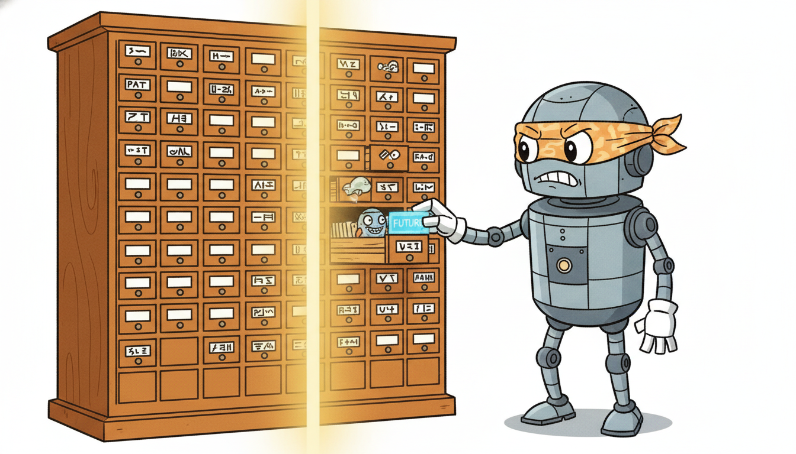

"I have one job and I take it personally: the number you trained on and the number you serve on had better be the same number. You computed a seven-day average yesterday on a clean batch and called it a feature; tonight a streaming row arrives late and you want me to hand the model something different. No. Same definition, same window, same answer, offline and online, or I am not signing off."
A Feature Store Insisting You Get the Same Number Offline and Online
A deployed temporal model fails in a uniquely silent way: it trains on features computed one way and serves on features computed another way, and the two disagree just enough to quietly destroy accuracy while every test passes. This is train/serve skew, and for temporal features it is sharpened by a second hazard, point-in-time correctness: a lag, a rolling mean, or a calendar flag must be computed using only information that existed at the prediction timestamp, never a value that leaked in from the future. The feature store is the piece of deployment infrastructure built to make these two guarantees structural rather than aspirational. It pairs an offline store (historical values, queried with point-in-time correct as-of joins to build training sets) with an online store (the latest value per entity, served at single-digit-millisecond latency), and it enforces that both are produced from one feature definition. Around the store sit data contracts: machine-checked agreements on the types, freshness, and ranges of every incoming field, so that upstream breakage is caught at ingestion rather than discovered as a forecast that went wrong three weeks ago. This section builds the train/serve skew picture, derives the temporal as-of join, shows contracts and lineage catching breakage, weighs streaming freshness against cost, then implements a tiny point-in-time feature store from scratch (a leaky naive join next to the correct as-of join) and reproduces it in a few lines of Feast. You leave able to reason about, and build, the data layer that keeps a temporal model honest in production.
In Section 34.2 we built the monitor-detect-retrain loop that keeps a deployed model honest as the world drifts; that loop, and the serving path of Section 34.1 it sits on, both assumed the features handed to the model at serving time were correct. This section retires that assumption, because it is the one most likely to be false in practice. The features are where deployed temporal systems break, and they break for a reason that classical software testing is poorly equipped to catch: the offline pipeline that built the training data and the online pipeline that builds the serving request are two different programs, written at different times by possibly different people, and nothing forces them to compute the same thing. When they diverge, the model does not crash; it just gets worse, and the degradation is attributed to drift, to the market, to anything but the real cause. The discipline this section teaches is how to make the two pipelines provably consistent and how to make every temporal feature point-in-time correct, so that the number is the same offline and online and never contains a value from the future. We use the unified notation of Appendix A: a feature value $\phi$ for entity $e$ as of time $t$ is written $\phi_e(t)$.
This material is the deployment-time payoff of a promise made at the very start of the book. Chapter 2, and Section 2.7 in particular, argued that reproducibility of temporal features depends on computing them with strict point-in-time discipline and no leakage; that argument was about building a trustworthy training set. Here the same discipline returns as production infrastructure: the feature store is the mechanism that carries Chapter 2's point-in-time guarantee from the offline training table all the way to the live serving path, so that the leakage-free feature you validated in development is byte-for-byte the feature your model receives in production. The leakage that Chapter 2 taught you to avoid in a dataframe is exactly the leakage an as-of join prevents in a store.
The competencies this section installs are four. First, to diagnose train/serve skew and explain why temporal features are especially prone to it. Second, to state and implement a point-in-time correct as-of join and to see, numerically, how a naive join leaks the future. Third, to write a data contract that rejects malformed, stale, or out-of-range data at ingestion, and to reason about lineage and versioning. Fourth, to weigh streaming feature freshness against materialization cost. These are the load-bearing skills for the cost and scaling concerns of Section 34.4 and for every operational chapter that follows.
1. Train/Serve Skew for Temporal Features Beginner

Train/serve skew is any difference between the feature values a model sees during training and the values it sees during serving. In a static machine-learning system this is already a known hazard: a normalization constant computed on the training set but recomputed differently online, a category encoded with one mapping offline and another online, a unit mismatch. Temporal features make the hazard worse in two compounding ways. The features are themselves functions of time (a lag, a rolling window, a since-last-event counter), so getting them right requires not just the same formula but the same notion of "now" and the same history; and the offline computation has access to the whole series at once while the online computation sees only a streaming prefix, so the two are tempted into structurally different implementations.
Concretely, consider a single temporal feature: the seven-day rolling mean of a sensor's reading for machine $e$, evaluated as of timestamp $t$,
$$\phi_e(t) \;=\; \frac{1}{|\mathcal{W}|}\sum_{\tau \in \mathcal{W}(t)} r_e(\tau), \qquad \mathcal{W}(t) = \{\tau : t - 7\,\text{days} \le \tau < t\}.$$Offline, this is a one-line groupby().rolling() over a full historical table. Online, it is a windowed aggregation maintained incrementally as readings stream in. The two are the same mathematical object $\phi_e(t)$, but they are two programs, and skew is any way those programs disagree: a different window boundary convention (does the window include $\tau = t$ or not?), a different handling of missing readings, a different time zone, a different rounding of timestamps. The model was trained to map the offline $\phi_e(t)$ to a target; serve it a subtly different number and you have moved the input off the manifold the model learned, with no error message to tell you so.
The temporal-specific edge, and the one classical skew discussions miss, is the direction of time. Offline you hold the entire series, so it is trivially easy to compute a feature using values that, at the real prediction moment, would not yet have existed: a "rolling mean" whose window accidentally includes $\tau \ge t$, a label-derived statistic, a forward-filled value that reached back from the future. That is leakage, and it inflates offline accuracy while being impossible to reproduce online (the future genuinely is not available at serving time). So leakage is a particularly vicious form of skew: it makes the offline and online features differ specifically because the offline one cheated. Figure 34.3.1 contrasts the leaky and correct feature timelines.
The reason skew is so dangerous is that it is invisible to the usual safety nets. Unit tests pass, because each pipeline is internally consistent. The model's offline evaluation looks excellent, because the offline features (sometimes leaky) are exactly what it trained on. Monitoring sees inputs in their expected ranges, because a slightly-wrong rolling mean is still a plausible rolling mean. The only symptom is that production accuracy is worse than offline accuracy promised, and that gap is easy to misattribute. The feature store's central value proposition is to make this whole class of bug structurally impossible by computing every feature from one definition and serving it consistently both ways.
It is worth naming the three flavors of temporal skew separately, because they call for different defenses and practitioners routinely conflate them. The first is definitional skew: the offline and online code compute genuinely different functions, a window that is inclusive on one side and exclusive on the other, a different missing-value policy, a different time zone. The fix is a single shared definition, which is exactly what the store provides. The second is leakage skew: the offline feature secretly used the future, so it cannot even in principle be reproduced online; the fix is point-in-time correctness, the as-of join of subsection two. The third is freshness skew: the definitions agree but the online value is staler than the offline one assumed, because materialization lags; the fix is a freshness budget and, where needed, streaming, the subject of subsection four. A feature store is the one piece of infrastructure that attacks all three at once, which is why it is worth its operational weight.
The defining principle of a feature store is "compute once, read twice". A feature is defined exactly once, as a transformation of source data. From that single definition the store derives two reads: an offline read that reconstructs the feature's full history with point-in-time correctness, used to assemble training sets, and an online read that returns the single latest value per entity, used at serving. Because both reads descend from the same definition, train/serve skew for that feature cannot arise from divergent code; it can only arise from a bug in the one definition, which is a single place to test and fix. Everything else in this section, as-of joins, contracts, materialization, exists to make that "compute once, read twice" guarantee real and cheap.
2. The Feature Store: Offline and Online, Kept Consistent Beginner
A feature store has two storage tiers serving two different access patterns. The offline store holds the full time-indexed history of every feature: many rows per entity, one per timestamp at which the feature changed or was recorded. Its job is to answer training-time queries of the form "for this list of (entity, event-timestamp) pairs, give me each feature's value as it stood at that timestamp", which is a point-in-time join. It lives in a columnar warehouse or lake (Parquet, BigQuery, Snowflake) optimized for large scans, not low latency. The online store holds only the latest value of each feature per entity: one row per entity, overwritten as new values arrive. Its job is to answer serving-time queries of the form "for this entity, give me the current value of these features" in a few milliseconds. It lives in a key-value store (Redis, DynamoDB, a fast SGBD cache) optimized for point lookups.
The two tiers stay consistent through materialization: a scheduled or streaming job reads feature values from the offline store (or directly from the source) and writes the latest value of each into the online store. Because both tiers are populated from the same feature definition and the materialization simply copies the most recent offline value forward, the online value an entity carries is, by construction, the same number the offline store would report as that entity's latest historical value. That is the structural guarantee against skew: the online store is not an independent re-implementation, it is a cache of the offline definition's latest output. Figure 34.3.2 shows the dataflow.
The heart of the offline read is the temporal as-of join, also called a point-in-time join. Given an entity $e$ and an event timestamp $t$ (the moment a prediction was or would be made), the as-of value of feature $\phi$ is the most recent recorded value at or before $t$, never after:
$$\phi_e^{\text{as-of}}(t) \;=\; \phi_e(\tau^\star), \qquad \tau^\star \;=\; \max\{\tau \in \mathcal{T}_e : \tau \le t\},$$where $\mathcal{T}_e$ is the set of timestamps at which feature $\phi$ was recorded for entity $e$. The constraint $\tau \le t$ (often $\tau < t$ if the event timestamp itself must be excluded) is the entire point: it forbids any value recorded after $t$ from entering the feature, which is precisely the no-future-leakage guarantee of Chapter 2 expressed as a join condition. A naive equi-join or a forward-looking merge ignores this constraint and is the leakage of subsection one in disguise. Many stores add a time-to-live so that $\tau^\star$ is also required to be recent, $t - \tau^\star \le \text{TTL}$, returning null when the most recent value is too stale to trust.
A machine $e$ records a maintenance-cost feature at three timestamps: $\phi_e(\text{Jan 1}) = 100$, $\phi_e(\text{Jan 5}) = 130$, $\phi_e(\text{Jan 9}) = 90$. We make a prediction at $t = \text{Jan 7}$. The as-of join selects $\tau^\star = \max\{\tau \le \text{Jan 7}\} = \text{Jan 5}$, so $\phi_e^{\text{as-of}}(\text{Jan 7}) = 130$. The Jan 9 value of $90$ is correctly excluded: it did not exist on Jan 7. A naive "nearest timestamp" join would pick Jan 9 (only two days away versus Jan 5's two days, and many implementations break ties toward the later value), returning $90$ and leaking a future observation into a Jan 7 feature. That single wrong row, multiplied across a training set, is enough to make offline accuracy look better than anything achievable online, because the model has been handed answers it can never have at serving time.
3. Data Contracts, Schema and Quality Enforcement, Lineage Intermediate
A feature store guarantees consistency between its two reads, but it cannot guarantee that the data flowing in is correct. That is the job of a data contract: a machine-checked agreement, enforced at the ingestion boundary, about the shape and quality of every incoming batch or event. The contract is the place where upstream breakage is caught early, before a malformed value propagates into both stores and corrupts every downstream prediction. A contract typically asserts four kinds of property. Types and schema: each field has a declared type and the set of fields is fixed, so a renamed or retyped upstream column is rejected rather than silently coerced. Ranges and validity: numeric fields lie in plausible bounds, categoricals are in a known set, identifiers are non-null. Freshness: the newest timestamp in the batch is within an allowed lag of now, so a stalled upstream feed is detected rather than served as if current. Distributional checks: optional, looser guards on the mean or null-rate of a field, to catch a sensor that started returning zeros.
The discipline is to fail at ingestion, loudly, rather than downstream, silently. A contract violation should stop the bad batch from being materialized and alert an owner, because the alternative, admitting it, means the corruption reaches the online store and every serving request until someone traces a forecast regression back to its source days later. This is the temporal analogue of the leakage discipline in Chapter 2: there we guarded the boundary between past and future inside one dataframe; here we guard the boundary between an upstream producer and our store. Code 34.3.1 is a minimal contract checker.
import pandas as pd
from datetime import datetime, timedelta
def check_contract(df, now):
"""Reject a batch that violates the feature data contract. Returns (ok, errors)."""
errors = []
# 1. Schema: exact required columns, correct dtypes.
required = {"machine_id": "object", "event_ts": "datetime64[ns]", "reading": "float64"}
for col, dtype in required.items():
if col not in df.columns:
errors.append(f"missing column: {col}")
elif str(df[col].dtype) != dtype:
errors.append(f"bad dtype for {col}: {df[col].dtype} (want {dtype})")
if errors: # schema must pass before value checks
return False, errors
# 2. Validity: no null ids, reading in a plausible physical range.
if df["machine_id"].isnull().any():
errors.append("null machine_id")
bad = ~df["reading"].between(0.0, 500.0) # sensor range contract
if bad.any():
errors.append(f"{int(bad.sum())} readings outside [0, 500]")
# 3. Freshness: newest event within an allowed lag of now.
max_lag = timedelta(hours=2)
if df["event_ts"].max() < now - max_lag:
errors.append(f"stale batch: newest event {df['event_ts'].max()} older than {max_lag}")
return len(errors) == 0, errors
now = datetime(2026, 6, 15, 12, 0)
good = pd.DataFrame({"machine_id": ["m1", "m2"],
"event_ts": pd.to_datetime(["2026-06-15 11:30", "2026-06-15 11:45"]),
"reading": [42.0, 87.5]})
bad = pd.DataFrame({"machine_id": ["m1", None],
"event_ts": pd.to_datetime(["2026-06-15 11:30", "2026-06-10 09:00"]),
"reading": [42.0, 999.0]})
print("good batch:", check_contract(good, now))
print("bad batch:", check_contract(bad, now))
good batch: (True, [])
bad batch: (False, ['null machine_id', '1 readings outside [0, 500]', 'stale batch: newest event 2026-06-10 09:00:00 older than 2:00:00'])
Two further disciplines complete the picture. Data versioning records the exact snapshot of source data (and the feature-definition version) that produced a given training set, so that a model is reproducible: re-running its pipeline against the versioned snapshot yields the same features. Lineage records the graph from source tables through transformations to features to model versions, so that when a contract fires or a regression appears you can trace which features, and therefore which predictions and which models, are affected. Together they answer the two questions every production incident asks: "can I reproduce exactly what the model saw?" and "what is downstream of this broken input?" Tools like Great Expectations and Pandera express contracts declaratively; tools like DVC, lakeFS, and the feature store's own registry carry the versioning and lineage.
A contract is also where the boundary between a producing team and a consuming team is made explicit and enforceable. In a large organization the team that emits the raw sensor stream is rarely the team that trains the model, and an innocent upstream change (a column rename, a unit switch from Celsius to Fahrenheit, a precision change) can silently break every feature derived from it. The contract turns that implicit dependency into a checked agreement: the producer commits to a schema and a freshness service-level objective, the consumer's ingestion rejects anything that violates it, and the violation is the producer's signal that a change they made broke a downstream commitment. This is the social half of the contract, and it matters as much as the technical half, because most production data incidents are not exotic corruption but ordinary upstream changes that nobody told the model team about. The temporal dimension makes the freshness clause of that agreement non-negotiable: a model that decides in real time cannot tolerate a feed that is silently hours late, so the freshness objective is part of the contract, not an afterthought.
There is a folk pattern where a contract check is added, fires constantly, annoys everyone, and is quietly disabled, after which the very breakage it warned about sails through and ruins a quarter's forecasts. The lesson is not "contracts are noisy", it is "a contract that fires constantly is reporting a real, chronic upstream problem you have chosen to ignore". A well-calibrated freshness check that goes off at 3 a.m. is not a false alarm; it is the upstream feed actually being two hours late, which is exactly the thing you wanted to know before your model served two-hour-old features to a live decision. Tune the threshold, do not mute the alarm.
4. Streaming Materialization and the Freshness-Cost Trade-off Intermediate
Materialization is the process that keeps the online store current, and how often it runs sets the freshness of served features. There are two regimes. Batch materialization runs on a schedule (hourly, nightly): a job recomputes features over recent data and writes the latest values into the online store. It is cheap and simple, but a feature is at most as fresh as the last batch, so a request arriving just before the next run sees a value up to one batch-interval old. Streaming materialization updates features continuously as events arrive, so the online value reflects data seconds old; it requires a streaming pipeline (Kafka plus Flink, Spark Structured Streaming, or the store's own streaming connector) and is more expensive to run and operate.
The choice is a freshness-versus-cost trade-off, and the right point depends entirely on how quickly the feature's true value moves relative to the prediction it feeds. A feature whose freshness ceiling is the batch interval $\Delta$ carries, in the worst case, an age of $\Delta$ at serving time; if the underlying quantity changes at rate $\rho$ per unit time, the stale-feature error is on the order of $\rho\,\Delta$. Streaming drives $\Delta$ toward seconds and that error toward zero, at a recurring compute and operational cost. So the decision rule is quantitative: stream the few features that are both fast-moving and decision-critical, batch the many that are slow or tolerant. A daily-updated customer lifetime-value feature gains nothing from streaming; a real-time count of failed login attempts in the last sixty seconds is useless unless streamed. Most production systems are hybrid, streaming a handful of features and batching the rest. Figure 34.3.3 lays out the trade.
| Property | Batch materialization | Streaming materialization |
|---|---|---|
| feature age at serving | up to one interval $\Delta$ (minutes to hours) | seconds |
| infrastructure | scheduled job, warehouse | streaming engine (Kafka/Flink), always on |
| compute cost | low, runs $1/\Delta$ times | high, runs continuously |
| operational burden | small | large (backpressure, exactly-once, recovery) |
| best for | slow or staleness-tolerant features | fast-moving, decision-critical features |
| stale-feature error | $\sim \rho\,\Delta$ | $\to 0$ |
Consider a fraud feature, the count of transactions by a card in the last five minutes, feeding a block/allow decision. Under hourly batch materialization, $\Delta = 60$ minutes, a fraudulent burst that starts right after a batch run is invisible to the model for up to an hour, by which time the loss is realized. Under streaming, the feature reflects transactions seconds old and the burst is caught on the next transaction. Now contrast a churn feature, days-since-last-purchase, feeding a weekly retention campaign: its value changes by one per day, so even daily batch ($\Delta = 1$ day) gives a worst-case staleness error of one day on a feature the weekly campaign reads at one-week granularity, a negligible $\rho\,\Delta$. Stream the fraud feature, batch the churn feature; streaming both would multiply cost for zero benefit on the second.
The feature-store landscape is consolidating and the point-in-time join is moving into the query engine. Open-source Feast (now a Linux Foundation project) has stabilized its point-in-time join API and broadened online-store backends, while managed platforms (Tecton, Databricks Feature Store, Vertex and SageMaker Feature Stores) push streaming materialization and on-demand (request-time) feature transforms as first-class. On the engine side, the as-of join has become a native operator: DuckDB's ASOF JOIN, ClickHouse's ASOF JOIN, and Polars' join_asof make point-in-time correctness a single SQL or dataframe call rather than hand-rolled window logic, which is steadily eroding the need for a separate offline-store implementation. A parallel 2024 to 2026 thread is the convergence of data contracts with the broader "data quality as code" movement: declarative contracts (Great Expectations, Pandera, the open Data Contract Specification) wired into CI and into the orchestration layer so that a schema or freshness violation fails a pipeline run, not a production model. The throughline for temporal AI: the guarantee this section is about, the same point-in-time number offline and online, is becoming infrastructure you configure rather than code you write.
5. Worked Example: A Tiny Point-in-Time Feature Store, From Scratch and With Feast Advanced
We now build the store. The plan demonstrates the whole section in executable form: a from-scratch offline store with a correct as-of join shown defeating a leaky naive join, an online latest-value lookup, and then the identical behavior in a few lines of Feast, with the line-count reduction stated. Code 34.3.2 is the from-scratch offline store, contrasting the leaky and the point-in-time correct joins on the same data so the leakage is visible as a number.
import pandas as pd
# Historical feature values for two machines: (entity, when recorded, value).
features = pd.DataFrame({
"machine_id": ["m1", "m1", "m1", "m2", "m2"],
"feature_ts": pd.to_datetime(["2026-01-01", "2026-01-05", "2026-01-09",
"2026-01-02", "2026-01-08"]),
"maint_cost": [100.0, 130.0, 90.0, 50.0, 70.0],
}).sort_values("feature_ts")
# Prediction requests: for each (entity, event time) we want the as-of feature.
requests = pd.DataFrame({
"machine_id": ["m1", "m2"],
"event_ts": pd.to_datetime(["2026-01-07", "2026-01-08"]),
})
def leaky_join(req, feat):
"""WRONG: nearest feature timestamp, ignoring the direction of time."""
out = []
for _, r in req.iterrows():
cand = feat[feat.machine_id == r.machine_id].copy()
cand["dist"] = (cand.feature_ts - r.event_ts).abs() # absolute distance: no past/future rule
out.append(cand.sort_values("dist").iloc[0]["maint_cost"])
return out
def asof_join(req, feat):
"""CORRECT point-in-time join: latest feature with feature_ts <= event_ts."""
req = req.sort_values("event_ts")
feat = feat.sort_values("feature_ts")
merged = pd.merge_asof(req, feat, left_on="event_ts", right_on="feature_ts",
by="machine_id", direction="backward") # backward = only the past
return merged["maint_cost"].tolist()
print("leaky (nearest) :", leaky_join(requests, features))
print("as-of (point-in-time):", asof_join(requests, features))
merge_asof(..., direction="backward") so only values recorded at or before the event time can be selected. The two return different numbers precisely where the nearest feature lies in the future.leaky (nearest) : [90.0, 70.0]
as-of (point-in-time): [130.0, 50.0]
Now the online side and a tiny materialization, completing the from-scratch store. Code 34.3.3 builds the online latest-value table by forwarding each entity's most recent feature, and serves a few-key lookup, the operation a model would perform at inference.
def materialize_online(feat):
"""Online store = latest value per entity (what serving reads)."""
latest = (feat.sort_values("feature_ts")
.groupby("machine_id").tail(1)
.set_index("machine_id")["maint_cost"])
return latest.to_dict() # {entity: latest_value}
def serve(online, machine_id):
"""Few-ms point lookup at inference time."""
return online.get(machine_id)
online_store = materialize_online(features)
print("online store :", online_store)
print("serve m1 :", serve(online_store, "m1"))
print("serve m2 :", serve(online_store, "m2"))
serve is the single-key lookup the model issues at inference. The served value for m1 is 90.0, the genuine latest value, which is consistent with the as-of join evaluated at "now".online store : {'m1': 90.0, 'm2': 70.0}
serve m1 : 90.0
serve m2 : 70.0
The from-scratch offline plus online store above, with its as-of join, materialization, and lookup, ran about 45 lines of careful temporal bookkeeping. A library collapses the whole thing: you declare an entity, a feature view over a source, and call get_historical_features (point-in-time correct by construction) and get_online_features. Code 34.3.4 is the Feast equivalent, roughly 18 lines for the declaration and both reads, a reduction of more than half, with the as-of correctness, the online materialization, and the registry all handled internally.
from feast import Entity, FeatureView, Field, FileSource, FeatureStore
from feast.types import Float64
from datetime import timedelta
# 1. Declare the source, entity, and feature view (the single feature definition).
machine = Entity(name="machine_id", join_keys=["machine_id"])
source = FileSource(path="maint.parquet", timestamp_field="feature_ts")
maint_fv = FeatureView(
name="maint", entities=[machine], ttl=timedelta(days=30),
schema=[Field(name="maint_cost", dtype=Float64)], source=source,
)
store = FeatureStore(repo_path=".") # reads feature_store.yaml
store.apply([machine, maint_fv]) # registers definition + lineage
# 2. Offline read: point-in-time correct training set (the as-of join, internal).
training_df = store.get_historical_features(
entity_df=requests.rename(columns={"event_ts": "event_timestamp"}),
features=["maint:maint_cost"],
).to_df()
# 3. Materialize to the online store, then serve the latest value.
store.materialize_incremental(end_date=pd.Timestamp.now())
online = store.get_online_features(
features=["maint:maint_cost"],
entity_rows=[{"machine_id": "m1"}],
).to_dict()
print(training_df[["machine_id", "maint_cost"]])
print(online["maint_cost"])
FeatureView is the single definition; get_historical_features performs the point-in-time as-of join internally (no hand-written merge_asof), materialize_incremental populates the online store, and get_online_features serves the latest value. The roughly 45 from-scratch lines of Code 34.3.2 and 34.3.3 reduce to about 18, with Feast handling as-of correctness, materialization, the registry, and lineage.Read the four code blocks together. Code 34.3.2 showed the leaky and correct joins disagreeing by a concrete number, the leakage of subsection one made visible. Code 34.3.3 built the consistent online lookup of subsection two. Code 34.3.4 reproduced both reads in a few lines of Feast, the "Right Tool" payoff: the point-in-time guarantee you implemented by hand is exactly what the library gives you by declaration. The lesson is that a feature store is not magic; it is the disciplined as-of join plus a latest-value cache plus a contract, and once you have built the small version you can read, configure, and trust the production one.
Who: A risk-engineering team at a payments company serving a real-time fraud model that blocks or allows card transactions, the sensor/telemetry-flavored stream threaded through Chapter 35.
Situation: Their model used a feature, "transactions by this card in the last hour", computed in an offline SQL job for training and re-implemented in the online serving service in application code. Offline AUC was excellent; production catch rate was disappointing and nobody could explain the gap.
Problem: The two implementations disagreed. The offline job's one-hour window was inclusive of the current transaction and used the warehouse clock; the online code excluded the current transaction and used the request arrival time, a different time zone. The feature the model trained on and the feature it served were quietly different numbers.
Dilemma: They could keep two implementations and try to test them into agreement (fragile, and they had already failed to), or adopt a feature store so the feature had exactly one definition and two reads, at the cost of migrating the serving path.
Decision: They moved the feature into a store with streaming materialization (the feature is fast-moving and decision-critical, exactly the streaming case of subsection four), defining the one-hour count once and letting the store serve both the offline as-of join for training and the online latest value for serving.
How: A single feature view defined the windowed count; get_historical_features built the training set with a point-in-time join, and the online store, fed by a streaming materialization job, served the same definition at request time. A data contract on the transaction stream enforced freshness so a stalled feed could not serve stale counts.
Result: The offline-to-online accuracy gap closed; production catch rate rose to match offline AUC because the served feature was now, by construction, the same number the model trained on. The freshness contract additionally caught an upstream outage that had previously served hour-old counts unnoticed.
Lesson: Two implementations of "the same" temporal feature will diverge; the only durable fix is one definition with two reads. A feature store is how you make "compute once, read twice" structural, and a freshness contract is how you keep the one definition's inputs trustworthy.
Even without a full feature store, the riskiest piece, the as-of join, is now a one-liner in modern engines. Pandas (merge_asof), Polars (join_asof), DuckDB and ClickHouse (ASOF JOIN) all implement point-in-time correctness natively, replacing dozens of lines of hand-rolled window logic with a single call and the right direction="backward". The full Feast store of Code 34.3.4 goes further, adding the online materialization, the registry, and lineage, turning the roughly 45 from-scratch lines into about 18 while handling exactly-once materialization and TTL internally. The rule: never hand-write a point-in-time join in production when an as-of operator exists; the hand-written version is where leakage hides.
6. Exercises
The exercises move from reasoning about skew, to implementing the correct join, to an open design question about the freshness-cost frontier.
A teammate computes a "last 30-day average spend" feature offline with df.groupby("user").rolling("30D").mean() and online with a streaming 30-day window, and reports that offline accuracy exceeds online accuracy by a wide margin. List three distinct, specific ways the two computations could differ that would produce this gap, and for each say whether it is leakage (a future value entering the offline feature) or ordinary skew (two consistent but different definitions). Which class is more dangerous and why?
Explain why the online store can be described as "a cache of the offline definition's latest value" and why this framing, rather than treating the online store as an independent system, is what structurally prevents train/serve skew. What property of the materialization job must hold for the framing to be true?
Extend the as-of join of Code 34.3.2 to enforce a time-to-live: return null (NaN) for a request whose nearest past feature is more than $\tau_{\max}$ days old, rather than returning a stale value. Test it with a request whose only past feature is well beyond the TTL and confirm it yields NaN, then with one inside the TTL and confirm it yields the value. Why is a TTL a temporal correctness concern and not merely a convenience?
Add a distributional check to the contract of Code 34.3.1: reject a batch whose fraction of reading == 0.0 exceeds 20 percent (a stuck-sensor guard), and whose mean reading has shifted by more than three standard deviations from a supplied reference mean and standard deviation. Construct one batch that passes the schema, range, and freshness checks but trips the new stuck-sensor guard, and confirm it is rejected.
You run 200 features for a forecasting service, all currently batch-materialized hourly. You are given a fixed streaming budget sufficient to stream 10 of them. Design a principled procedure to choose which 10 to stream, using the stale-feature error model $\sim \rho\,\Delta$ from subsection four: define how you would estimate each feature's rate of change $\rho$ and its decision-criticality (its leverage on the prediction), combine them into a ranking, and discuss what the procedure misses (for example interactions between features, or features whose criticality is conditional on rare events). Sketch how you would validate the chosen set against held-out production outcomes.